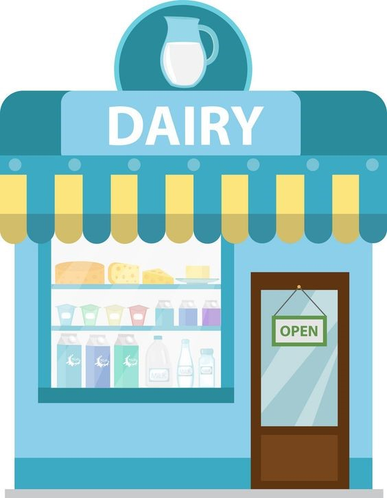
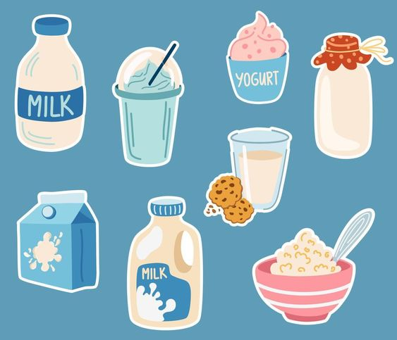

The day we opened the doors of the milk shop, we felt a rush of excitement and nervousness all at once. The shop was small but charming, with wooden shelves lined with glass bottles of milk, colorful cheeses, and a variety of milk-based treats. We had a counter with fresh milkshakes, smoothies, and even homemade ice cream for those who wanted a special treat. We had a big sign above the door: “My Dairy Shop: Fresh, Local, and Pure.” The morning of the grand opening, we stood behind the counter, ready to greet the first customers. There was a quiet buzz in the air as people walked by, curious about the new shop. We had done everything we could to make it special—the chalkboard signs with fun facts about milk, the friendly staff, the smell of freshly baked cookies to pair with the milkshakes.
the months passed, our milk shop grew. We expanded your offerings to include dairy products from local farms, such as creamy butter, cheeses, and yogurt. We introduced a line of flavored milks—honey, cinnamon, chocolate—that became instant favorites. We also held milk-tasting events, where people could sample different kinds of milk and learn about the unique flavors of each. Word of mouth did wonders for our shop, and our regulars started bringing their families and friends. We made sure to always stay connected with our customers, asking for feedback, hosting special events, and celebrating holidays with themed treats like eggnog during Christmas and pumpkin spice milkshakes in the fall. We also collaborated with local businesses, creating gift baskets with our milk and their products. We supported local artists by displaying their milk-themed artwork on your walls, and we hosted milk-and-cookie nights, where kids (and adults) could decorate their own cookies to pair with a glass of milk.
Please click on the picture to go to our Products Page.
